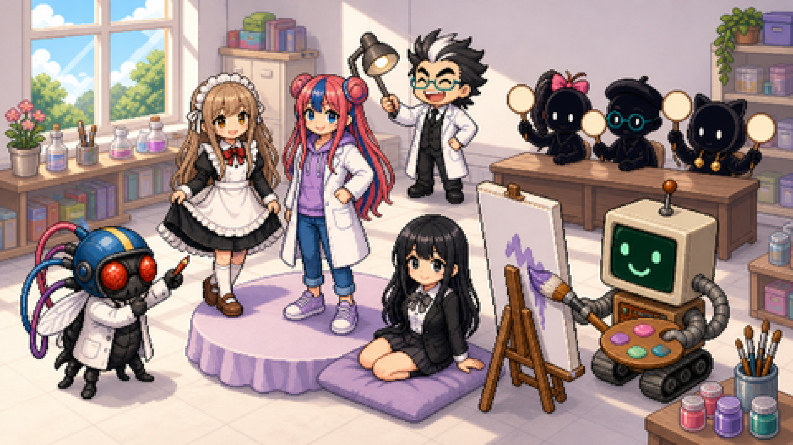

편 목록
모델은 하루·시아·모아, 화가는 주판봇과 초파리, 평가단은 X1·X2·X3, 해설은 박사입니다. 부마다 두 화가가 겨루고 평가단이 점수를 매깁니다.

기초편에서 구조·빛·주름의 원리를 배웠다면, 이번에는 주름 없는 선화에 직접 넣어 봅니다. 순서는 늘 같습니다. 접점을 찾고, 주름을 넣고, 광원을 정해 그림자를 칠합니다. 자세와 옷, 조명이 바뀌어도 이 순서는 그대로입니다.
그림 실력·코드·수식을 몰라도 됩니다. 실험을 눌러 보며 따라오세요.
모델은 하루·시아·모아, 화가는 주판봇과 초파리, 평가단은 X1·X2·X3, 해설은 박사입니다. 부마다 두 화가가 겨루고 평가단이 점수를 매깁니다.
| 부 | 제목 | 이 부를 배우는 까닭 | 배우는 것 |
|---|---|---|---|
| 1 | 서 있는 자세 | 주름 없는 선화에 무엇부터 넣어야 할지 모른다 | 접점 → 관절 → 꼭대기 → 큰 그림자 → 단차 |
| 2 | 주름 많은 옷 | 접점·힘만으로는 프릴처럼 일부러 만든 주름을 설명 못 한다 | 개더 비율·조임·큰 선·짝 장식·섞인 그림자 |
| 3 | 앉은 자세 | 서 있을 때 규칙만으로는 관절과 겹침이 많은 자세가 무너진다 | 관절 각도·단추·소재·주름치마·겹침 순서 |
| 4 | 광원 방향 | 1~3부는 광원을 위쪽에 고정했다. 다른 조명에서는 그림자 자리가 막힌다 | 방향·아래 빛·옆 빛·각도·다시 조명 |
| 5 | 실전 연습장 | 배운 것을 한 화면에서 함께 다뤄 본다 | 접점 탐정·프릴 공방·조명실·숙제 책상 |
원리를 먼저 보고 싶다면: 기초편 — 구조 먼저 보는 캐릭터 그리기 연구실(1~7부)
 시아인턴1 · 모델(2부). 프릴 많은 메이드복의 주인공
시아인턴1 · 모델(2부). 프릴 많은 메이드복의 주인공 모아인턴2 · 모델(3부). 블레이저를 입고 바닥에 앉는다
모아인턴2 · 모델(3부). 블레이저를 입고 바닥에 앉는다 주판봇화가 A. 주름·그림자를 감으로 먼저 넣는다 — 흔한 실수 담당
주판봇화가 A. 주름·그림자를 감으로 먼저 넣는다 — 흔한 실수 담당 초파리 연구원화가 B. 접점과 광원부터 찾는다. "이걸 눌러 봐"
초파리 연구원화가 B. 접점과 광원부터 찾는다. "이걸 눌러 봐" X1평가단. 닮음을 본다
X1평가단. 닮음을 본다 X3평가단. 자연스러움을 본다
X3평가단. 자연스러움을 본다연습의 구성(서 있는 자세 → 주름 많은 옷 → 앉은 자세 → 광원 방향별 그림자, 그리고 같은 왼쪽 광원도 각도에 따라 그림자가 다르다는 칼럼)은 다테 나오토의 작법서 『デジタルツールで描く！服のシワと影の描き方』(マイナビ) 3장 실천편과 출판사 특전 PDF를 참고했습니다. 책의 그림·사진·문장·도식은 옮기지 않았고, 연구실 캐릭터와 직접 움직이는 실험으로 새로 구성했습니다. 숫자 식(두께 × 각, 개더 비율, tan, (1 + cos φ) ÷ 2, 내적)은 원리를 보이려고 이 페이지에서 덧붙인 것입니다.
AI와의 연결(포즈·깊이 가이드, 확산 모델, 다시 조명)은 아래 출처의 논문을 바탕으로 쉽게 풀었습니다. 그림은 연구실 캐릭터로 Genspark에서 새로 만들었습니다(표지 6장은 16비트 픽셀아트, 본문 20장은 애니풍). 그림 속 빨간 화살표·동그라미는 그 단계에서 볼 곳을 가리킵니다.
이 페이지에 나온 개념·방법·비유·쓰임을 모았습니다. 검색하고, "설명 보러 가기"로 본문에 돌아갑니다.
지식 색인을 출처와 함께 파일로 내려받습니다. 서지 관리는 BibTeX·RIS, 온톨로지 편집은 Turtle, 그래프 도구는 CSV, 여러 페이지 합치기는 kg.json입니다.